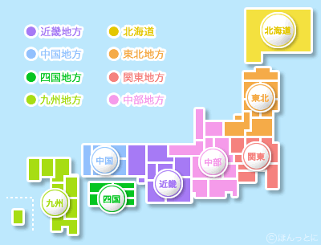

MainTitle
その文書のメインコンテンツであることを表す。 main要素はコンテンツを区分するが、文書のアウトラインに影響することも、 影響されることもない。
文書内でmain要素は1つのみ記述できる。
main要素の中には、header要素、nav要素、footer要素は含まない。
■header
セクション内でのヘッダ構造として定義する。セクションに対して一度だけ記述できる 通常はセクションの見出し(h1～h6)を含むように意図されているが必須ではない。 header要素はセクショニング要素ではないため、アウトラインを生成しない
■nav
ナビゲーションを定義する。 ドキュメント内の全てのサイドメニューやリンクをnav要素にするのではなく、 主にサイト内のコンテンツを移動する主要なナビゲーションに使用する。
■section
セクションを構成する汎用的な要素。 通常、各セクションはsection要素の子として見出し(h1～h6)を含めることによって識別される。
■footer
セクションのフッタ構造を定義する。 セクションのフッタの場合と、ページ全体のフッタの場合がある。 必ずしもセクションの最後に記載する必要はない。
■address
イタリック体になる。 address要素が含まれているセクション要素の住所や連絡先を表す要素。 連絡先情報以外は含められない。
■article
独立したコンテンツとして再配布可能、または再利用可能なコンテンツを記述する。 article要素が入れ子になる場合、内側の要素の内容は、外側の要素の内容と関連している内容となる。
■aside
メインコンテンツ以外の内容を指定する要素。
■main
その文書のメインコンテンツであることを表す。 main要素はコンテンツを区分するが、文書のアウトラインに影響することも、 影響されることもない。
文書内でmain要素は1つのみ記述できる。
main要素の中には、header要素、nav要素、footer要素は含まない。
■ol,li
リストの並び順に意味や意図がある場合に使用する。
■ul,li
順序が重要ではないリストを記述する場合に使用する。
■dl,dt,dd
名前と値のグループを持つリストを記述する場合に使用する。 名前と値のグループは、用語とその定義、質問と回答などを記述する。 dt要素に名前、dd要素に値を記述する。
■div
div要素の内容
特別な意味を持たない要素。どうしても他の要素を指定するのが適切出ない場合のみ使用する。
■pre
整形済みテキスト。 インデント、改行もそのまま表示される。
フォントサイズが替わる。
■blockquote
blockquote要素の内容
インデントされる。 他から文書などを引用したセクションであることを表す。
■figure,figcaption
説明文の付いた図や表などを表す。figure要素はドキュメントの流れに影響を及ぼさない。
■a
リンクhref属性が存在しない場合、target属性、download属性、rel属性、hreflang属性、type属性は記述できない。 target="_blank"が非推奨ではなくなった。
■strong
重要文言 【重要文言入れ子】 普通の文言
太字になる。 入れ子にすることも可能。入れ子の階層が深いほど、その内容の重要性が増す。
■small
本文注意事項：注意！
フォントサイズが小さくなる。 注意事項、免責事項等に使用する。 重要度や強調の意味は無い。
■time
正確な日付や日時を記載する場合に使用する。 datetime属性を指定した場合、time要素の中に日付、日時以外の内容を記載できるが、 記載内容とdatetime属性で指定した日付、日時が一致する必要がある
■em
普通の文言強調文言
イタリック体になる。 入れ子にすることも可能。入れ子の階層が深いほど、その内容の強調が増す。
■cite
引用した作品のタイトルイタリック体になる。 作者名などには使用できない。
■q
引用した文書、テキストなど
引用符で囲まれる。 q要素を使用せず、文中で引用符で囲むことも可能。 html要素でlang="ja"を指定していると「」で囲まれる模様。 cssで言語と引用符を指定可能。
■dfn
用語
用語の定義
イタリック体になる。 用語の定義を記載する。dfn要素の最も近い親要素であるdl要素、 p要素などの中にdfn要素によって指定された用語の定義を含んでいる必要がある。
■abbr
HTML
略語または頭文字を表すために使用する。 title属性を指定する場合、正式名称を記載する。 title属性の内容がツールチップとして表示される。
■code
var s = 1 + 2;
プログラムなどのコードを記載する。
■var
Variable
変数を記載する。数式やプログラムで変数や定数を表す識別子、物理量、関数のパラメータなどに使用する。
■samp
出力結果サンプル
プログラムを実行した際の何らかの出力結果の例や、コンピュータが返す何らかのメッセージの例。
■kbd
ユーザーが入力する内容
ユーザー入力を表す。通常はキーボード入力だが、音声コマンドのような他の入力を表すことも可能。
■sub
log10X
下付き文字を表す。 特定の意味を持つ表記方法のために使用する要素で、 単に文字が下付きになるという表示の見栄えのために使用してはならない。
■sup
100m2
下付き文字を表す。 特定の意味を持つ表記方法のために使用する要素で、 単に文字が上付きになるという表示の見栄えのために使用してはならない。
■i
声や心の中で思ったこと
イタリック体になる。 声や心の中で思ったことなど、他と区別したいテキストを表す際に使用する。 i要素で異なる言語のテキスト部分をマークアップする場合、lang属性で言語を指定する必要がある。
■b
他と区別したいテキスト
太字になる。 他と区別したいテキストを表す際に使用する。他の要素でマークアップできない場合に使用する。
■u
スペルミスなど
下線が付く。 ニュアンスなどがはっきりと伝わりにくかったり、 あえて本来の意味とは違う意味で使っているテキストや、スペルミスなどを表す際に使用する。
■mark
ハイライト
ハイライトさせることにより注意が向くようにするために使用する。重要性は表さない。
■ruby,rt,rp,rtc
漢字
[ruby]ルビ(ふりがな)を振る場合に使用する。
[rt]ルビ(ふりがな)を振る。
[rp]ルビ(ふりがな)をサポートしていないブラウザの場合用の文言を記述する
[rtc]rtをグループ化する。1つのルビ対象テキストに対して、複数のルビを適用したい場合などに使用する。
■bdi
rightあいうえお
テキストの一部分を異なる文字の表記方向に指定する場合に使用する。
■wbr
aaaaaaaaaaaaaaaaaaaaaaaaaaaaaaaaaaaaaaaaaaaaaaaaaaaaaaaaaaaaaaaaaaaaaaaaaaaaaaaaaaaaaaaaaaaaaaaaaaaaaaaaaaaaaaaaaaaaaaaaaaaaaaaaaaaaaaaaaaaaaaaaaaaaaaaaaaaaaaaaaaaaaaaaaaaaaaaaaaaaaaaaaaaaaaaaaaaaaaaaaaaaaaaaaaaaaaaaaaaaaaaaaaaaaaaaaaaaaaaaaaaaaaaaaaaaaaaaaaaaaaaaaaaaaaaaaaaaaaaaaaaaaaaaaaaaaaaaaaaaaaaaaaaaaaaaaaaaaaaa⇒
コンテンツの表示領域が小さくなったときに折り返す位置を明示的に指定する場合に使用する。
■ins
追加されたテキストや画像
下線が付く。 追加された部分であることを示す際に使用する。
■del
削除箇所 削除箇所
取消線が付く。 削除された部分であることを示す際に使用する。
■s
正確ではないテキスト
取消線が付く。 テキストが正確でないことを示す場合に使用する。
■img
画像を埋め込む際に使用する。src属性は必須。alt属性は必須でなくなった。
■iframe
インラインフレームでコンテンツを表示する場合に使用する。
seamless属性はインラインフレームのコンテンツを親コンテンツの一部のように表示する際に使用するが、 現状メジャーなブラウザでもサポートされていない模様。
sandbox属性は、悪意あるコンテンツから被害を受けるのを避けるために、 フレーム内コンテンツの表示に制限を加える際に使用する。指定できる値は下記(複数指定可)。| 値 | 概要 |
|---|---|
| allow-same-origin | フレーム内のコンテンツの出処が、親ページと同じものとされる |
| allow-forms | フレーム内のコンテンツのフォームを有効にする |
| allow-scripts | フレーム内のコンテンツのスクリプトを有効にする。ただし、ポップアップは無効 |
■embed
外部アプリケーションやインタラクティブなコンテンツ、 例えば、Flashなどのプラグインを必要とするデータをHTML文書に埋め込む際に使用する。
■object
文書に外部リソースを埋め込む際に使用する。 embed要素がプラグインを必要とするデータを埋め込むのに対して、 objectには外部リソース全般を指定することができる。
■param
object要素の子要素として、object要素で指定されたオブジェクトのパラメータを指定する。
■video,source
video要素は動画を読み込み、再生する際に使用する。 現状、ブラウザによってサポートされている動画形式が異なる。
source要素は動画や音声などのメディアファイルのURLや種類を指定する際に、 video要素、audio要素などの中で子要素として使用する。
■canvas
グラフィックを描画する際に使用する。
■map,area

map要素は任意のimg要素のイメージマップを定義する。map要素内に複数のarea要素を配置する。 また、map要素の中には、その他のコンテンツも配置することが可能。
area要素は画像内にリンクを指定する場合にmap要素内に指定する。 id属性を指定する場合は、name属性と同値にしなければならない。 HTML5ではリンク領域はarea要素でのみ指定が可能となった。また、input要素との関連付けが不可となった。
【ara要素のshape属性について】 ara要素のshape属性には画像の座標を指定する。 「circle(円)」を指定した場合、coords属性の値は3つの整数のリストとなる。 ・1つ目の整数は画像の左端から円の中心までのピクセル距離 ・2つ目の整数は画像の上端から円の中心までのピクセル距離 ・3つ目の整数は円の半径のピクセル距離 「poly(多角形)」を指定した場合、coords属性の値は少なくとも 6つ以上の偶数個の整数のリストとなる。 整数2つごとに順番にペアとなって座標が決定されるが、 整数のペアが3組あれば三角形、4組あれば四角形…となる。 「rect(四角形)」を指定した場合、coords属性の値は4つの整数のリストとなる。 polyで四角形を指定する場合は8つの整数のリストが必要だが、 rectで四角形を指定する場合は4つの整数のリストでよい。 「default」のキーワードで初期状態を指定している場合には、coords属性は指定できない。 この場合、画像全体がハイパーリンク領域となる。 ※ペイントで座標取得可能
■table,thead,tbody,tfoot,th,td
| No | Name | Code | Col1 | Col2 |
|---|---|---|---|---|
| 1 | Name1 | Code1 | Col11 | Col12 |
| 2 | Name2 | Code2 | Col21 | Col22 |
| footer1 | footer2 | footer3 | footer4 | footer5 |
table要素は表組みを作成する際に使用する。レイアウトのために使用すべきではない。
thead要素は表のヘッダを定義する。table要素内に1つのみ記述可能。
tbody要素は表の本体を定義する。table要素内に複数記述可能。 なお、table要素の直下にtr要素が記述されると、tbody要素が暗黙的に定義される。
tfoot要素は表のフッタを定義する。table要素内に1つのみ記述可能。
th要素は表の見出しを表す。scope属性によって、どのデータの見出しかを指定することができる。
・row 見出しセルは同じ横行の後続のセルに適用 ・col 見出しセルは同じ縦列の後続のセルに適用 ・rowgroup 見出しセルは同じ横行の後続の全セルに適用 ・colgroup 見出しセルは同じ縦列の後続の全セルに適用
td要素は表のデータセルを表す。header属性によって、ヘッダ(th要素)を指定できる。
■caption
| No | Name | Code | Col1 | Col2 |
|---|---|---|---|---|
| 1 | Name1 | Code1 | Col11 | Col12 |
| 2 | Name2 | Code2 | Col21 | Col22 |
| footer1 | footer2 | footer3 | footer4 | footer5 |
表のタイトルを表す。table要素の子要素のため必ずtable要素が親要素として必要となり、 1つのtable要素に対して1つのみ指定可能。
table要素がfigure要素内に記述されている場合はcaption要素ではなく、 figcaption要素を使用する。
■colgroup
| No | Name | Code | Col1 | Col2 |
|---|---|---|---|---|
| 1 | Name1 | Code1 | Col11 | Col12 |
| 2 | Name2 | Code2 | Col21 | Col22 |
| footer1 | footer2 | footer3 | footer4 | footer5 |
表の列をグループ化する。グループ化した列には同じ属性やスタイルを適用することができる。
グループ化する列の個数をspan属性で指定する。 colgroup要素内にcol要素を配置する場合はspan属性は指定できない(col要素側で指定する)。
■col
| No | Name | Code | Col1 | Col2 |
|---|---|---|---|---|
| 1 | Name1 | Code1 | Col11 | Col12 |
| 2 | Name2 | Code2 | Col21 | Col22 |
| footer1 | footer2 | footer3 | footer4 | footer5 |
複数の列に同じ属性やスタイルを適用する際に使用する。 span属性を指定していないcolgroup要素内に配置する。 colgroup要素と異なり、グループ化するという意味は持たない。
■form
入力フォームをまとめ、入力されたデータをサーバに送信することが可能。
HTML5よりform要素外に入力フォームを配置することができるようになった
(入力フォーム要素のform属性に、form要素のid属性値を指定する)。
■fieldset,legend,label
fieldset要素は複数の入力フォームをグループ化する場合に指定する。 fieldset要素にdisabled属性を指定すると fieldset要素内のすべての入力フォームが無効になる。
legend要素はfieldset要素内の最初に記述し、 グループ化された入力フォームのキャプションを指定する。
label要素は入力フォームに項目名などのラベルを付ける。
■input